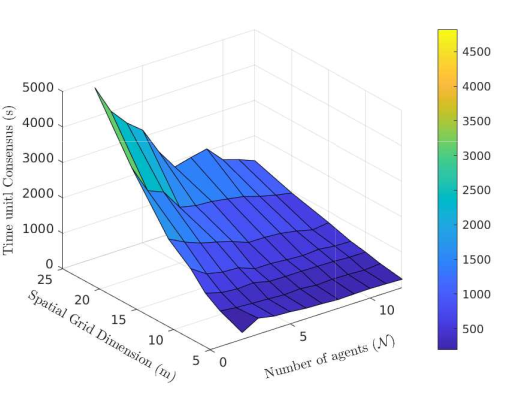
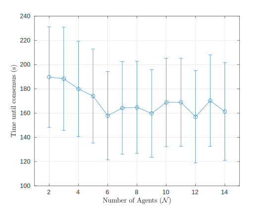
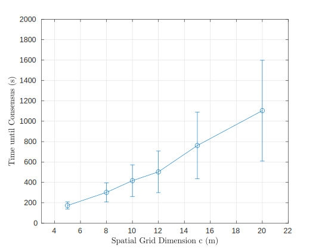
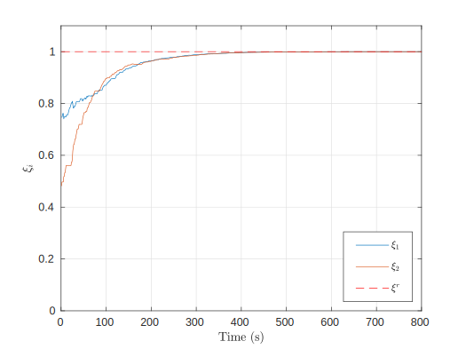
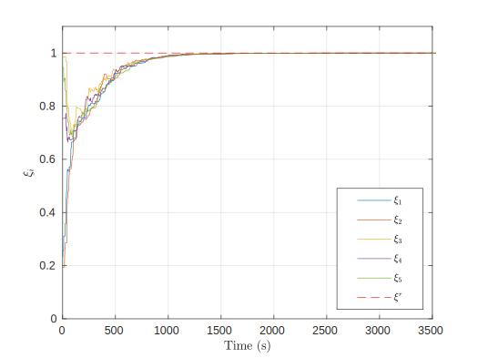
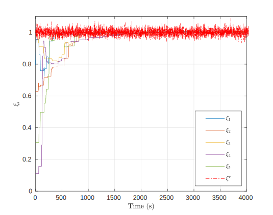
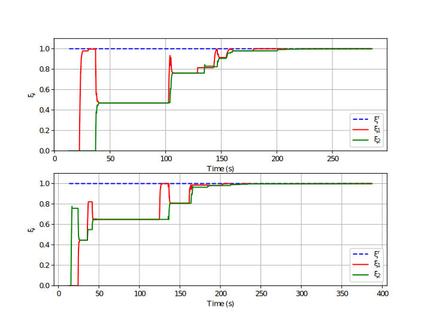
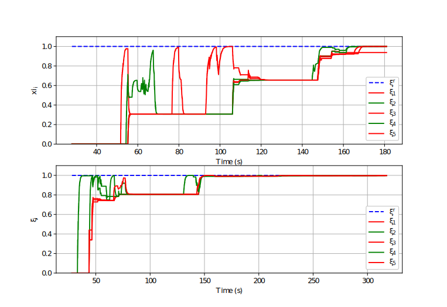

Discrete Space Discrete Time Markov Chains for Distributed Mapping using Consensus
Aniket Shirsat
04/08/2020
Summary of the discussion
- Main Conrtibutions
- Problem Statement
- Markov Chains Analysis
- Consensus Strategy
- Simulation Results and Conclusion
Problem Statement
- To generate a map \( \mathcal{M} \) of an environment by a group of agents who traverse the environment using a random walk approach and have only local communication capability
- In this paper we take a first step in formulating the basic results for the above strategy.
Notations & Assumptions
- We consider an unknown, bounded environment that contains a finite, non-zero number of static features of interest, indexed by the set \( \mathcal{I} \subset \mathbb{Z}_+ \), where \( \mathbb{Z}_+ \) is the set of positive integers.
- A set of \( N \) agents, indexed by the set \( \mathcal{N} = \{1,2,...,N\}\), explore the environment using a random walk strategy.
- We assume that each agent can localize itself in the environment and can detect a feature within its sensing range.
- The agent associates the detected feature with a \( \textit{scalar information state} \) \( \xi_{a}[k] \)
- The vector of information states for all agents at time \( k \) is denoted by \( \boldsymbol{\xi}[k] \)
- The initial information state of each agent \( a \) is specified \( \textit{a priori} \) as \( \xi_{a}[0] \sim \mathcal{U}(0,1) \)
- The agent can communicate its information state \( \xi_{a}[k] \) at time \( k \) to all agents within a disc of radius \( r_{comm} \in (0,\delta] \), where \( \delta \) is the maximum communication radius.
- We define these agents as the set of \( \textit{neighbors} \) of agent \( a \) at time \( k \), denoted by \( \mathcal{N}_k^a \).
- We also assume that the agents can avoid each other and obastcales in the environment if any.
- We discretize the environment into a square grid of nodes spaced distance \( d \) apart and denote them by \( \mathcal{S} \subset \mathbb{Z}_{+} \).
- \( \mathcal{G}_{s} = (\mathcal{V}_{s}, \mathcal{E}_{s}) \) be an undirected graph associated with this finite spatial grid
- \( \mathcal{Z}_k^a \) denotes the random variable that represents the node position that an agent \( a \) occupies at time instance \( k \).
- The agents distribution is given by \( \pi_{k+1} = \pi_{k}\mathbf{P}, \mathbf{P} \in \mathbb{R}^{S \times S}, S = |\mathcal{S}| \)
- \( \xi^{r} \in \mathbb{R}_{\geq 0} \) is the \( \textit{reference information state} \).
- \( \mathcal{G}_c[k] = (\mathcal{V}_{c},\mathcal{E}_{c}[k]); \mathcal{V}_{c} = \mathcal{N}, \mathcal{E}_{c}[k]= \{(a,b) \in \mathcal{N} \times \mathcal{N} | a \rightarrow b,k \geq 0 \} \)
- \( \mathbf{M}[k] \in \mathbb{R}^{\textit{N} \times \textit{N}} \) is the adjacency matrix
- \( \mathbf{L}[k] \in \mathbb{R}^{N \times N} \) as the graph Laplacian \( l_{ab}[k] = \sum_{b=1}^{N} m_{ab}[k] = deg(v_a) \) if \( a = b \) and \( l_{ab}[k] = -m_{ab}[k] \) if \( a \neq b \)
Main Contributions
- We show that, under local communication constraints, consensus on the presence of a static feature is almost surely achieved by a group of agents performing random walks on a finite spatial grid.
- Through Monte Carlo simulations, we empirically characterize the dependence of the expected time until consensus on the number of agents and the grid size, showing that this time generally increases as agent density decreases
Basics of Markov Chains
Definition
- A Markov chain is collection of random variables \(Z^k_a\) (where the index \(k\) runs through 0, 1, ...) having the property that, given the present, the future is conditionally independent of the past for each agent \(a \).
- In other words,
\( Pr(Z_{k+1}^{a} = j ~|~ Z_{k}^{a} = i, Z_{k-1}^{a} = m, \ldots, Z_0^{a} = l )
= Pr(Z_{k+1}^{a} = j ~|~ Z_k^{a} = i)\)
State Transition Matrix
- Let \(p_{ij}= Pr(Z_{k+1}^{a} = j ~|~ Z_{k}^{a} = i),~ \forall i,j \in \mathcal{S}, ~k \in \mathbb{Z}_+, ~\forall a \in \mathcal{N} \)
- where \( p_{ij} \) is the transition probability of moving from i → j
- \( p_{ij} = \begin{cases}
\frac{1}{d_{i}+1}, & (i,j) \in \mathcal{E}_{s} \\
0, & otherwise
\end{cases}\)
- \( d_i\) is the degree of the node
Stochastic Matrix
The state transition matrix \( P \) is a stochastic matrix which means that:
- \( \Sigma_{j=1}^{S} p_{ij}= 1, \forall i \in \mathcal{S} \)
- \( p_{ij} \geq 0, \forall i,j \in \mathcal{S} \)
Stationary Distribution
A vector \( \pi \in \mathbb{R}^{S} \) is called a stationary distribution of a Markov chain if \( \pi \) has entries such that:
- \( \pi_{j} \geq 0,\forall j \in \mathcal{S} \) and \( \sum_{j=1}^{S} \pi_{j} =1 \)
- \( \pi \mathbf{P} = \pi \)
Irreducible Markov Chain
- A Markov chain is called irreducible if all the states belong to one closed communication class.
- Also a MC is called irreducible if a state from any to any other state in finite time.
By construction, the spatial grid forms an \( \textit{irreducible} \) MC. Thus the transition matrix associated with that process is an \( \textit{irreducible} \) matrix.
By using \( \textit{Perron Frobenius} \) Lemma, we get that for a stochastic matrix \( \rho(P) =1 \) and it admits a positive left eigen vector of \( P \) which is the stationary distribution of the DTDS MC.
Recurrent Markov Chain
Theorem 3.3
- An irreducible Markov chain with transition matrix \( \mathbf{P} \) is positive recurrent if and only if there exists a probability distribution \( \pi \) such that \( \pi \mathbf{P} = \pi \)
- We have already shown that MC associated with the spatial grid is \( \textit{irreducible} \) and admits a stationary distribution.
- Thus using \( \textit{Theorem 3.3} \) we can say that the associated MC is also \( \textit{positive recurrent} \)
- Due to \( \textit{positive recurrence} \), the agents will keep visiting every node on the spatial grid infinitely often.
Consensus Strategy
Definition of Average Consensus
- We say that the information vectot \( \boldsymbol{\xi}[k] \) reaches average consensus if
- \( \boldsymbol{\xi}[k]~ \overset{a.s}{\rightarrow} ~ \xi^{r} \mathbf{1} \)
where \( \mathbf{1} \in \mathbb{R}^{N} \) is a vector of ones
Information Update for Consensus
- \( \xi_{a} [k+1] = \xi_{a}[k] - \alpha \sum_{b \in \mathcal{N}^a_k} l_{ab}[k]*(\xi_{a}[k] - \xi_{b}[k]) \\
- g_{a} * \gamma (\xi_{a}[k] - \xi^{r}) \)
- \( a,b \in \mathcal{N}\) represents the agent identity
- \( \alpha \in (0,1] \) is the interaction weight
- \( \gamma \in (0,1] \) is a proportional gain.
- \( g_{{a}} = \begin{cases}
1, & Z_{k}^{a} \in \mathcal{Z}^{r} \\
0, & {\rm otherwise}
\end{cases} \)
Composite Markov Chain
- The dynamics of all agents' movements on the spatial grid can be modeled by a composite Markov chain with states defined as \( \mathbf{Z}_k = (Z^1_k, Z^2_k, ..., Z^N_k) \in \mathcal{M} \), where \( \mathcal{M} = \mathcal{S}^{\mathcal{N}}\). \( S = |\mathcal{S}| \) and \( |\mathcal{M}| = S^N \).
- We define an undirected graph \( \hat{\mathcal{G}} = (\hat{\mathcal{V}},\hat{\mathcal{E}}) \) that is associated with the composite Markov chain.
- The vertex set \( \hat{\mathcal{V}}\) is the set of all possible realizations \( \hat{\imath} \in \mathcal{M} \) of \( \mathbf{Z}_k \).
- \( \hat{\imath}(a) \) represents the \( a^{th} \) entry of \( \hat{\imath} \), which is the spatial node \( i \in \mathcal{S} \) occupied by agent \( a \).
- \( \hat{\mathcal{E}} \) is defined as \( (\hat{\imath},\hat{\jmath}) \in \hat{\mathcal{E}}\) if and only if \( (\hat{\imath}(a),\hat{\jmath}(a)) \in \mathcal{E}_s \) for all agents \( a \in \mathcal{N} \)
- \( \mathbf{Q} \in \mathbb{R}^{ | \mathcal{M}| \times |\mathcal{M}|} \) be the state transition matrix associated with the composite Markov chain. whose elements are denoted by: \( q_{\hat{\imath} \hat{\jmath}} = \prod_{a=1}^{N} p_{\hat{\imath}(a) \hat{\jmath}(a)}, \forall \hat{\imath}, \hat{\jmath} \in \mathcal{M} \)
Information Update Dynamics
- \( \boldsymbol{\hat{\xi}}[k] = [\xi_1[k] \xi_2[k] \ldots \xi_N[k] \xi^r]^T \in \mathbb{R}^{N+1} \) as the augmented state information state vector
- The information update equation can be represented as in a matrix form is represented as
- \( \boldsymbol{\hat{\xi}}[k+1] = \mathbf{H}[k] \boldsymbol{\hat{\xi}}[k] \)
- \( \begin{equation} \mathbf{H}[k] = \begin{bmatrix}
~\mathbf{I} - \alpha \mathbf{L}[k] + \gamma diag(\mathbf{d}) & ~~ - \gamma \mathbf{d} ~ \\
~\mathbf{0} & 1
\end{bmatrix} \label{eqn:RefUpdateMatrixNotation}
\end{equation} \)
- \( \mathbf{d} = [g_{1} ~ g_{2} ~ \ldots ~ g_{N}]^T \)
- \( \mathcal{G}_{r}[k] = (\mathcal{V}_{r},\mathcal{E}_{r}[k]) \) be a directed graph in which \( \mathcal{V}_{r} = \mathcal{N} \cup a_f \), the set of agents and the feature, and \( \mathcal{E}_{r}[k] = \mathcal{E}_c[k] \cup \mathcal{E}_f[k] \) where \( \mathcal{E}_f[k] \) is the set of agent-feature pairs \( (a,a_f) \) for which \(Z_{k}^{a} \in \mathcal{Z}^{r} \) at time \( k \)
Main Result
Theorem
- Consider a group of \( N \) agents whose information states evolve according to the previous equation.
The information states of all agents will converge to the reference information state \( \xi^r \) almost surely.
Proof:
- Suppose that at an initial time \( k_{0} \), the locations of the \( N \) agents on the spatial grid are represented by the node \( \hat{\imath} \in \hat{\mathcal{V}} \).
- Consider another set of agent locations at a future time \( k_0 + k \), represented by the node \( \hat{\jmath} \in \hat{\mathcal{V}} \).
- The transition of the agents from configuration \( \hat{\imath} \) to configuration \( \hat{\jmath} \) in \( k \) time steps corresponds to a random walk of length \( k \) on the composite Markov chain \( \mathbf{Z}_k \) from node \( \hat{\imath} \) to node \( \hat{\jmath} \).
- This also corresponds to a random walk by each agent $a$ on the spatial grid from node \( \hat{\imath}(a) \) to node \( \hat{\jmath}(a) \) in \( k \) time steps.
- By construction, the graph \( \mathcal{G}_s \) is strongly connected and each of its nodes has a self-edge.
Thus, there exists a discrete time \( n>0 \) such that, for each agent \( a \), there exists a random walk on the spatial grid from node \( \hat{\imath}(a) \) to node \( \hat{\jmath}(a) \) in \( n \) time steps.
- Thus, there always exists a random walk of length \( n \) on the composite Markov chain \( \mathbf{Z}_k \) from node \( \hat{\imath} \) to node \( \hat{\jmath} \) \( \Rightarrow \mathbf{Z}_k \) is an irreducible Markov chain \( \Rightarrow \) all states belong to a single communication class \( \Rightarrow \) all states are \( \textit{recurrent} \Rightarrow \) all states are visited inifinitely often.
- Since, the composite Markov chain is irreducible, we can conclude that \( \cup_{k \in \mathbb{Z}_+} \mathcal{G}_c[k] = \mathcal{G}_0 \), where \( \mathcal{G}_0 \) is the complete graph on the set of agents \( \mathcal{N} \), and therefore that \( \cup_{k \in \mathbb{Z}_+} \mathcal{G}_r[k] \) contains a directed spanning tree with \( \xi^{r} \) as the fixed root.
- Since this union of graphs has a spanning tree, we can apply Theorem 3.1 in [1] to conclude that the information state of each agent will converge to \( \xi^{r} \) almost surely
[1] Ion Matei, Nuno C Martins, and John S Baras. Consensus problemswith directed Markovian communication patterns. In2009 AmericanControl Conference, pages 1298–1303. IEEE, 2009
Monte Carlo Simulations
Mean time (s) until consensus is reached, \( \mu \), versus number of agents \( N \) and spatial grid dimension \( c \). Each value of \( \mu \) is averaged over 1000 Monte Carlo simulations of scenarios with the corresponding values of \( N \) and \( c \)
- This demonstrates that a decrease in the agent density \( N/c^2 \) leads to lower agent encounter rates with other agents and with the feature nodes
Monte Carlo Simulations
 Time until consensus is reached with varying numbers of agents \( N \) and grid dimension \( c = 5\)
 Time until consensus is reached,with varying \( c\) and \( N = 5 \)
- The left plot shows that for the chosen grid size, \( \sigma \) does not vary substantially with \( N \), whereas the right plot shows that for the chosen number of agents, \( \sigma \) increases significantly with \( c \) (i.e., there is much more variation in the time until consensus over larger domains)
Matlab Simulations
Time evolution of the agent information states \( \xi_{a} [k] \)in simulations of N= 2 agents moving on a 3×3 grid

Time evolution of the agent information states \( \xi_{a} [k] \)in simulations of N= 5 agents moving on a 10×10 grid
Matlab Simulations
Time evolution of the agent information states \( \xi_a[k]\) in a simulation of \( N=5 \) agents moving on a \( 10 \times 10 \) grid, with \( \xi^{r} \sim \mathcal{N}(1,0.02) \)
Time until consensus is reached ( \( \mu \pm \sigma \) ), computed from 1000 Monte Carlo simulations of scenarios with different values of \( \xi^r \) and \( \alpha \)
| Ref. information |
Interaction weight | Time until consensus is reached (s) ( \( \mu \pm \sigma \) ) |
| \( \xi^{r} =1 \) |
\( \alpha = 0 \) |
\( 10896 \pm 657 \) |
|
\( \alpha = 0.5 \) |
\( 9782 \pm 324 \) |
| \( \xi^{r} \sim \mathcal{N}(1,0.02) \) |
\( \alpha = 0 \) |
\( 12679 \pm 633 \) |
|
\( \alpha = 0.5 \) |
\( 9812 \pm 147 \) |
Gazebo Simulations
Time evolution of the robot information states \( \xi_a[k] \) in two Gazebo simulations with \( N=2 \) robots moving on a \( 3 \times 3 \) grid
Time evolution of the robot information states \( \xi_a[k] \) in two Gazebo simulations with \( N=5 \) robots moving on a \( 5 \times 5 \) grid.
/